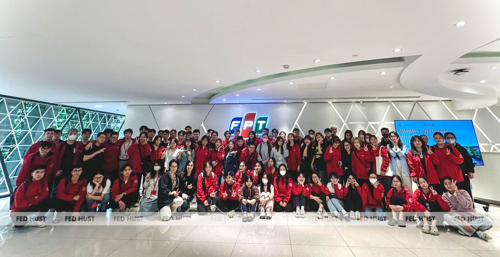
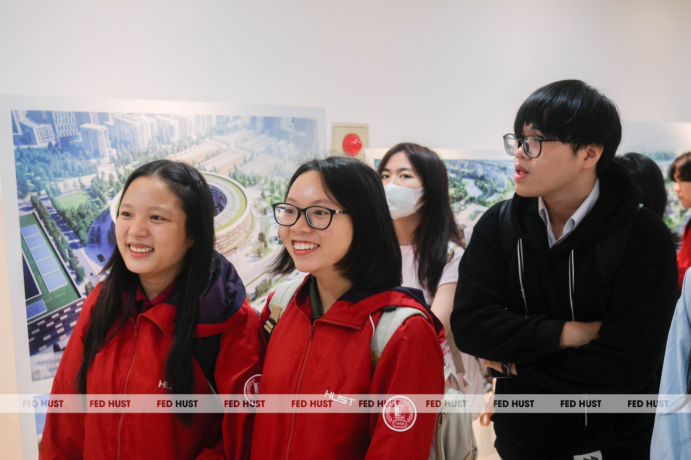
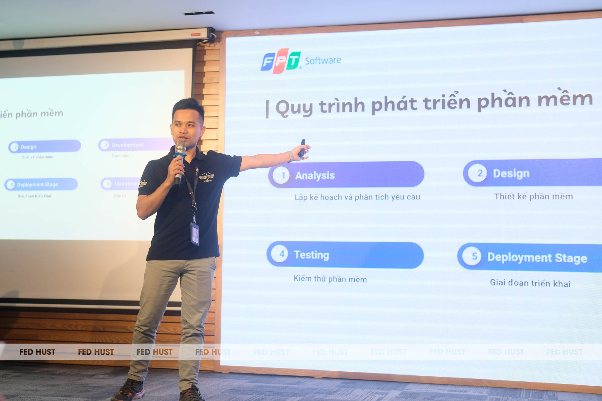
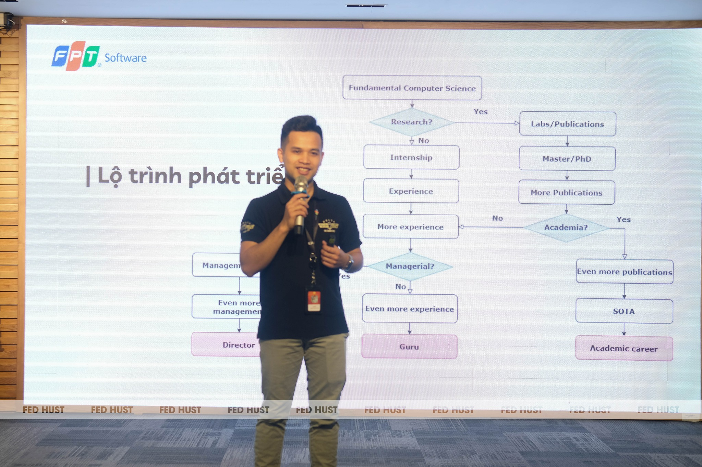
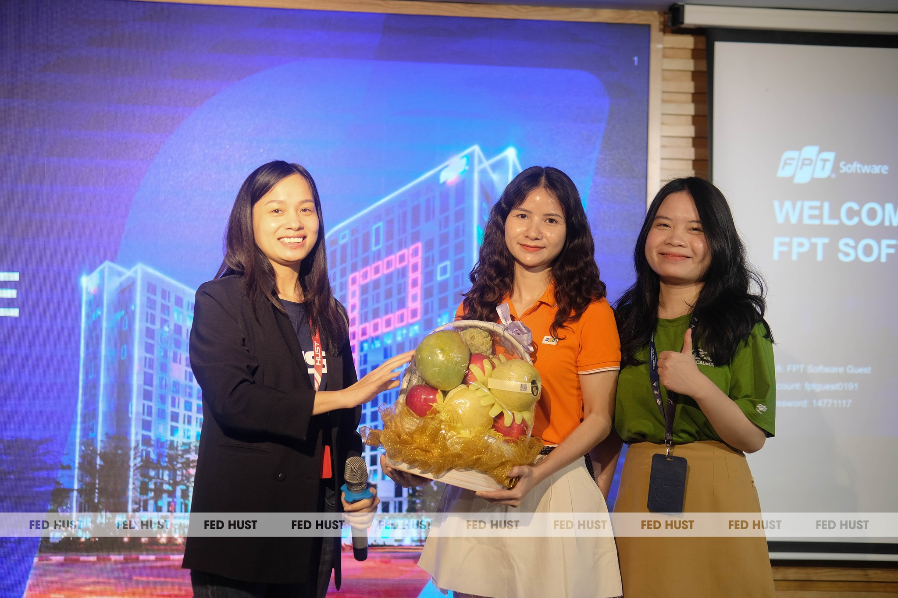

TRẢI NGHIỆM THỰC TẾ TẠI
FPT SOFTWARE
KẾT NỐI TRI THỨC VỚI MÔI TRƯỜNG CÔNG NGHỆ HIỆN ĐẠI
Tăng cường gắn kết giữa đào tạo đại học và thực tiễn nghề nghiệp, sinh viên ngành Công nghệ Giáo dục đã tham gia chương trình tham quan và trải nghiệm thực tế tại FPT Software – một trong những doanh nghiệp công nghệ hàng đầu Việt Nam. Hoạt động mang đến cho sinh viên cơ hội tiếp cận môi trường làm việc chuyên nghiệp, tìm hiểu về quy mô hoạt động, các lĩnh vực kinh doanh cũng như những xu hướng công nghệ đang được ứng dụng trong doanh nghiệp hiện nay.

01 KHÁM PHÁ MÔI TRƯỜNG LÀM VIỆC HIỆN ĐẠI
Trong khuôn khổ chương trình, sinh viên được tham quan không gian làm việc, tìm hiểu mô hình vận hành và văn hóa doanh nghiệp tại FPT Software. Những chia sẻ từ đại diện doanh nghiệp đã giúp các bạn hiểu rõ hơn về cách thức tổ chức các dự án công nghệ, quy trình phát triển sản phẩm và yêu cầu đối với nguồn nhân lực trong lĩnh vực công nghệ số.
Thông qua các hoạt động trải nghiệm thực tế, sinh viên có dịp quan sát cách công nghệ được ứng dụng để giải quyết các bài toán trong doanh nghiệp, từ đó mở rộng góc nhìn về khả năng kết hợp giữa công nghệ và giáo dục.

02 GIAO LƯU CÙNG CHUYÊN GIA, ĐỊNH HƯỚNG NGHỀ NGHIỆP TƯƠNG LAI
Các bạn sinh viên được tiếp cận với những kiến thức thực tiễn về quy trình phát triển sản phẩm công nghệ thông qua phần chia sẻ của các chuyên gia tại FPT Software. Từ quá trình phân tích nhu cầu người dùng, thiết kế giải pháp, phát triển, kiểm thử đến triển khai sản phẩm, sinh viên có cơ hội hiểu rõ hơn cách một sản phẩm công nghệ được hình thành và vận hành trong thực tế.
Bên cạnh việc tìm hiểu về quy trình phát triển phần mềm và môi trường làm việc tại doanh nghiệp, sinh viên còn được lắng nghe những chia sẻ về lộ trình phát triển nghề nghiệp trong lĩnh vực công nghệ. Thông qua các ví dụ thực tế từ chuyên gia, các bạn được hình dung rõ hơn con đường phát triển từ khi còn là sinh viên đến khi trở thành chuyên gia, nhà quản lý hoặc nhà nghiên cứu trong tương lai.
Từ đó, sinh viên có thể lựa chọn nhiều hướng phát triển khác nhau như tham gia nghiên cứu khoa học, học tập ở bậc cao hơn, tích lũy kinh nghiệm thông qua thực tập và các dự án thực tế hoặc phát triển theo con đường quản lý.


03 ĐẨY MẠNH HỢP TÁC GIỮA NHÀ TRƯỜNG VÀ DOANH NGHIỆP
Hoạt động trải nghiệm tại FPT Software là một trong những chương trình nằm trong định hướng tăng cường hợp tác giữa nhà trường và doanh nghiệp của ngành Công nghệ Giáo dục. Thông qua các hoạt động tham quan, thực tập và trải nghiệm nghề nghiệp, sinh viên được tạo điều kiện tiếp cận môi trường làm việc thực tế, cập nhật xu hướng công nghệ mới và phát triển năng lực nghề nghiệp đáp ứng nhu cầu của xã hội số.
Những trải nghiệm thực tế tại doanh nghiệp sẽ tiếp tục là cầu nối quan trọng giúp sinh viên Công nghệ Giáo dục nâng cao năng lực chuyên môn, mở rộng cơ hội nghề nghiệp và sẵn sàng trở thành nguồn nhân lực chất lượng cao trong tương lai.
